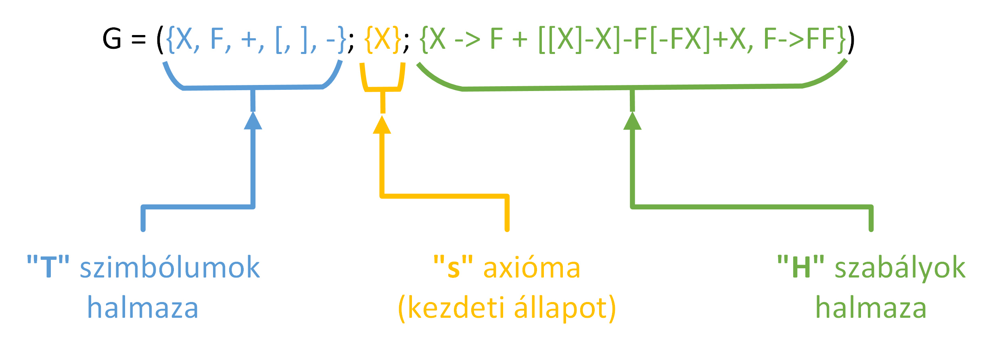
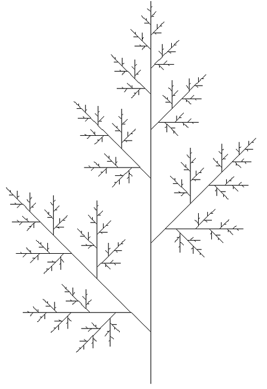
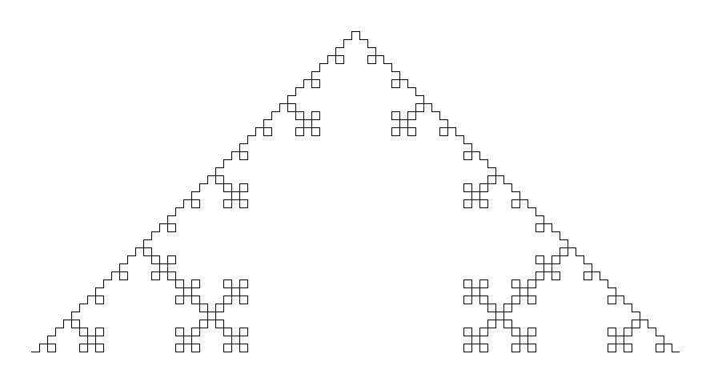
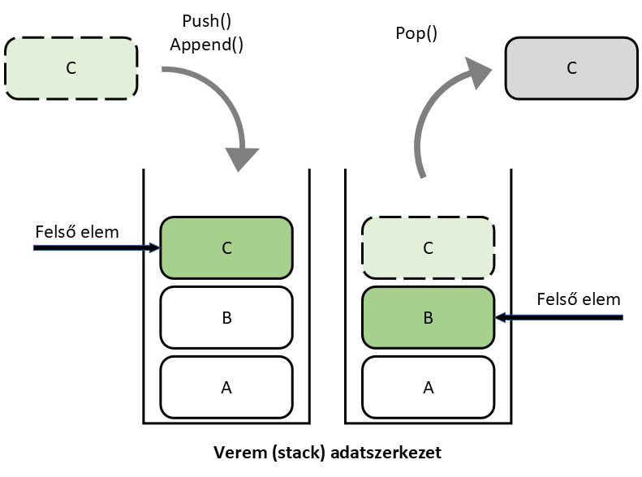
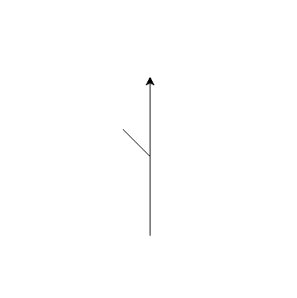
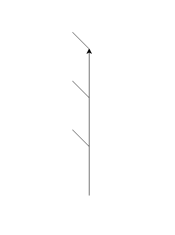
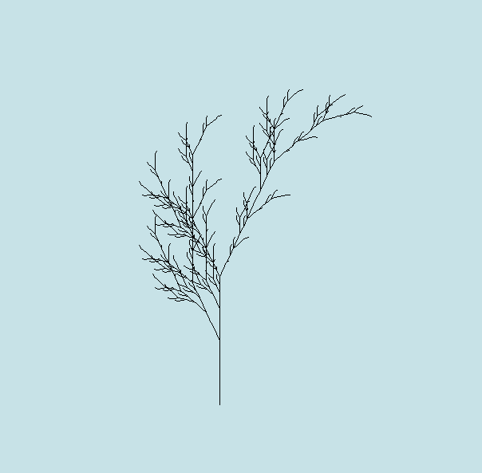

L-rendszerek#
Bevezetés#
Az L-system (Lindenmayer rendszer) egy matematikai formális nyelv. Sorozatokat hoz létre azáltal, hogy ismételten alkalmaz bizonyos szabályokat egy kiindulási állapoton. Az “L” az L-rendszerben Aristid Lindenmayer magyar kutató nevéből származik. Lindenmayer élesztőgombákkal foglalkozott. Az L-rendszer eredetileg egyszerű biológiai struktúrák (gombák és baktériumok) fejlődésének leírására és modellezésére készült, ám később növények és más élőlények alaktanára is használták.
Formálisan következőképpen adható meg:
G = (T; s; H), ahol T egy véges ábécé, s az axióma, H a szabályok halmaza.
A T véges ábécé szimbólumokat tartalmaz, például X, F, +, [, ].
Az s axióma a kezdeti állapotot jelöli.
A H szabályok halmaza, amelyek leírják az adott L-rendszerben végbemenő átmeneteket.

A karakterek és szabályok iteratív alkalmazásával geometriai alakzatokat lehet készíteni. Az alakzatok létrejötte az axiómából indul, majd a rendszer szabályait ismételten alkalmazva alakulnak ki. Minden iterációban a karakterláncot a szabályoknak megfelelően módosítják, és így alakul ki a végleges geometriai forma.
Az L-rendszerek rendkívül hatékonyak lehetnek a növények struktúrájának modellezésére. A növények ágazódása, leveleinek elrendeződése és számos más aspektusa leírható szabályokkal és iterációkkal. Például, egy egyszerű L-rendszer képlet segítségével lehetséges faágakat és leveleket modellezni. Játékfejlesztésben például procedurális térképgenerálás, terep, növényzet létrehozásánál használatos.
Az eredeti rendszerek determinisztikusak és önhasonlóság jellemzi őket.

Kipróbálható: https://kevs3d.co.uk/dev/lsystems/ {cite:p}
L-rendszer megvalósítása:#
Szabályok értelmezése - pl.: H={F→F+F−F−F+F} - szabály azt jelenti, hogy minden F szimbólum az L-rendszerben az F+F−F−F+F karakterláncra változik.
Nyelvtant alkalmazó függvény elkészítése - szabály(ok) alkalmazásával létrehozza a soron következő iteráció kimenetét, ami egy karakterlánc és szó-nak nevezünk.
Megjelenítésért felelős függvény elkészítése - a karakterlánc egyes szimbólumai információt hordoznak, ezeket grafikus instrukciókká alakítjuk és ábrázoljuk.
1. Példa - egyszerű szabályrendszer#
Például adott a G = ({a, b}; a; {a → b}) L-rendszer. Az ismétlések (iterációk) során alkalmazzuk a szabályokat az aktuális sorozatra, létrehozva egyre bonyolultabb és részletesebb struktúrákat. Az L-rendszer axiómája “A” és a szabály az, hogy minden “A” cserélődik “AB” sorozatra, akkor az iterációk során a sorozat így fejlődik:
Iteráció: A (kezdeti állapot, maga az axióma)
Iteráció: AB (az “A” helyettesítve “AB”-vel)
Iteráció: ABB
Iteráció: ABBB
Pszeudokód:
A program bekéri a végrehajtandó iterációk számát, utána végigmegy az aktuális szó minden karakterén és a ”new” nevű változóhoz szabályok alapján hozzáadja a szükséges karaktereket. Minden iteráció végén kiírja a szót, ”axiom” nevű változót aktualizálja és a ”new” változót kiüríti.
# ({A,B}; A; {A->AB, B->B})
axiom = "A"
new = ""
# n = int(input("Adja meg az iterációk számát: "))
n = 5
for i in range(0, n):
print(str(i) + ". iteráció: " + axiom)
for letter in axiom:
if letter == "A":
new += "AB"
elif letter == "B":
new += "B"
axiom = new
new = ""
0. iteráció: A
1. iteráció: AB
2. iteráció: ABB
3. iteráció: ABBB
4. iteráció: ABBBB
1. Feladat#
Ábrázolja a következő rendszer 4 iterációját az alábbi specifikáció alapján!
Kezdeti állapot: F
Szabályok: (F → FR), (R → FR)
Ahol:
“F” jelentése “előre rajzol”
“R” jelentése “jobbra fordul 90°-kal”
2. Feladat
#Az előző kódok alapján készítse el a következő rendszer megvalósítását:
Kezdeti állpot: X
Szabályok: (X → F+[[X]-X]-F[-FX]+X), (F → FF)
Ahol:
“F” jelentése “előre rajzol”
“−” jelentése “jobbra fordul 25°-kal”
“+” jelentése “balra fordul 25°-kal”
“X” jelentése nem felel meg semmiféle rajzolási műveletnek, és a görbe alakulásának irányítására szolgál
“[” jelentése a jelenlegi pozíció és szög értékek mentése
“]” jelentése az utolsó mentett pozíció és szög visszaállítása és a mentett adatsor törlése
Forráskód:#
# (X → F+[[X]-X]-F[-FX]+X), (F → FF)
axiom = "X"
# n = int(input("Adja meg az iterációk számát: "))
n = 2
for i in range(n + 1):
new = ""
print(str(i) + ". iteráció: " + axiom)
for letter in axiom:
if letter == "X":
new += "F+[[X]-X]-F[-FX]+X"
elif letter == "F":
new += "FF"
else:
new += letter
axiom = new
0. iteráció: X
1. iteráció: F+[[X]-X]-F[-FX]+X
2. iteráció: FF+[[F+[[X]-X]-F[-FX]+X]-F+[[X]-X]-F[-FX]+X]-FF[-FFF+[[X]-X]-F[-FX]+X]+F+[[X]-X]-F[-FX]+X
2. Példa - Koch-görbe leírása#
Az alábbi példa a Koch-görbe leírását mutatja be. A szabályok a következők:
G=({F,+,−};F;{F→F+F−F−F+F})
Ahol:
“F” jelentése “előre”
“+” jelentése “fordulj balra 90°-ot”
“-” jelentése “fordulj jobbra 90°-ot”
2.1. Alap probléma megoldása, nyelv generálása:#
Figyeljük meg, hogy a szabály alapján minden egyes ‘F’ betű helyét 5db ‘F’ betű kerül. Ez azt jelenti, hogy a generált nyelv hossza 5n, ahol n az iterációk számát jelenti (pl.: 3. iteráció 125db ‘F’ karaktert eredményez). Könnyen belátható, hogy ez exponenciális növekedést eredményez. A kiindulási állapot megjelenítése miatt szükséges a ciklus első iterációját külön kezelni.
# F → F+F−F−F+F
axiom = "F"
new = ""
# n = int(input("Adja meg az iterációk számát: "))
n = 3
for i in range(0, n + 1):
print(str(i) + ". iteráció: " + axiom)
for letter in axiom:
if letter == "F":
new += "F+F-F-F+F"
else:
new += letter
axiom = new
new = ""
0. iteráció: F
1. iteráció: F+F-F-F+F
2. iteráció: F+F-F-F+F+F+F-F-F+F-F+F-F-F+F-F+F-F-F+F+F+F-F-F+F
3. iteráció: F+F-F-F+F+F+F-F-F+F-F+F-F-F+F-F+F-F-F+F+F+F-F-F+F+F+F-F-F+F+F+F-F-F+F-F+F-F-F+F-F+F-F-F+F+F+F-F-F+F-F+F-F-F+F+F+F-F-F+F-F+F-F-F+F-F+F-F-F+F+F+F-F-F+F-F+F-F-F+F+F+F-F-F+F-F+F-F-F+F-F+F-F-F+F+F+F-F-F+F+F+F-F-F+F+F+F-F-F+F-F+F-F-F+F-F+F-F-F+F+F+F-F-F+F
2.2. Nyelv generálása - függvény formájában#
A Python nyelv szintaxisa alapján az előző rövid kódot függvénnyé alakítottuk és kicsit módosítottuk. Ez segíti a kód későbbi felhasználhatóságát.
axiom = "F"
def generateSentence(ax, n):
for i in range(1, n + 1):
new = ""
for letter in ax:
if letter == "F":
new += "F+F-F-F+F"
else:
new += letter
ax = new
print(str(i) + ". iteráció: " + ax)
return ax
# n = int(input("Adja meg az iterációk számát: "))
n = 3
sentence = generateSentence(axiom, n)
print("Kimenet: " + sentence)
1. iteráció: F+F-F-F+F
2. iteráció: F+F-F-F+F+F+F-F-F+F-F+F-F-F+F-F+F-F-F+F+F+F-F-F+F
3. iteráció: F+F-F-F+F+F+F-F-F+F-F+F-F-F+F-F+F-F-F+F+F+F-F-F+F+F+F-F-F+F+F+F-F-F+F-F+F-F-F+F-F+F-F-F+F+F+F-F-F+F-F+F-F-F+F+F+F-F-F+F-F+F-F-F+F-F+F-F-F+F+F+F-F-F+F-F+F-F-F+F+F+F-F-F+F-F+F-F-F+F-F+F-F-F+F+F+F-F-F+F+F+F-F-F+F+F+F-F-F+F-F+F-F-F+F-F+F-F-F+F+F+F-F-F+F
Kimenet: F+F-F-F+F+F+F-F-F+F-F+F-F-F+F-F+F-F-F+F+F+F-F-F+F+F+F-F-F+F+F+F-F-F+F-F+F-F-F+F-F+F-F-F+F+F+F-F-F+F-F+F-F-F+F+F+F-F-F+F-F+F-F-F+F-F+F-F-F+F+F+F-F-F+F-F+F-F-F+F+F+F-F-F+F-F+F-F-F+F-F+F-F-F+F+F+F-F-F+F+F+F-F-F+F+F+F-F-F+F-F+F-F-F+F-F+F-F-F+F+F+F-F-F+F
3. Nyelvtan szavainak ábrázolása - Turtle Graphics#
Turtle egy könnyen kezelhető könyvtár grafikai munkák elvégzésére
A turtleStart() függvény tartalmazza a grafikára vonatkozó alap beállításokat: középre helyezi a kurzort, engedélyezi a rajzolást és meghatározza a használt vászon(kép) méretét.
penup()- megszünteti a rajzolást (következő pendown() eseményig nem rajzol vonalat)pendown()- előző utasítás párja, ez után következő parancsok rajzolnakspeed()- meghatározza a rajzolás sebességét, értéke megadható “slowest” - “fastest” között, vagy egész számmal 1-10-ig.hideturtle()- elrejti kurzortscreensize()- megjelnítéshez használt vászon méretét és színét lehet állítani,canvwidth,canvheight,bgparaméterek megadásávalexitonclick()- bezárja az elkészített ábráttracer()- alapértelmezett esetben (1) mutatja az animációt, 0 érték esetén a kész ábrát mutatja
import turtle
def turtleStart(x, y):
turtle.screensize(canvwidth=1000, canvheight=1000, bg="white")
turtle.hideturtle()
turtle.penup()
turtle.setposition(x, y)
turtle.pendown()
turtle.speed("fastest")
turtle.tracer()
Alapvető vezérlési utasítások
forward()- előre megyleft()- balra fordulright()- jobbra fordulgoto()- adott koordinátára rakja a kurzort
import importlib
importlib.reload(turtle)
def drawSentence(s):
for i in s:
if i == "F":
turtle.forward(10)
elif i == "+":
turtle.left(90)
elif i == "-":
turtle.right(90)
turtleStart(-350, -100)
drawSentence(sentence)
turtle.exitonclick()

3. Feladat
#A Koch-görbének több változata is ismert. Készítsük el az alábbi nyelvtan által megadott verziót!
G=({F,+,−};F;{F→F-F++F-F})
Ahol:
“F” jelentése “előre”
“+” jelentése “fordulj balra 60°-ot”
“-” jelentése “fordulj jobbra 60°-ot”

Változtassuk meg a kezdeti állapotot a következők szerint:
G=({F,+,−};F++F++F;{F→F-F++F-F})
4. Ágak ábrázolása és a verem adatszerkezet#
A fa megrajzolása áganként történik olyan módon, hogy először a program megrajzol egy teljes ágat, utána visszatér a “törzshöz” és új ág rajzolásába kezd. Ebből adódik a probléma, hogy hogyan fog visszatérni a megfelelő helyre program? Az ágak kezdetét mindig elágazás (jelölést tekintve általában +,- szimbólumok) jelzi.
A verem egy LIFO (Last In First Out) adatszerkezet, a mi esetünkben az aktuális pozíciót és szöget tárolja el. Adattárolásra használjuk.
Képzeld el,hogy vannak játékkockáid, amiket csak egymásra rakhatsz, mintha egy tornyot építenél. A torony szétszedésénél, mindig a legutolsó kocka, amit tettél rá (vagyis a legfelső), veheted le először.
Két jellegzetes hozzá kapcsolódó parancs a push (Python esetén append) és a pop:
push - verembe helyezi a kijelölt adatot
pop - eltávolítja az utoljára verembe helyezett adatot

4.1 Példa - egyszerű példa verem adatszerkezetre#
verem = []
verem.append(1)
verem.append(2)
verem.append(3)
print(verem)
verem.pop()
print(verem)
[1, 2, 3]
[1, 2]
4.2 Példa - fordított sorrend verem segítségével#
verem = []
verem.append(1)
verem.append(2)
verem.append(3)
print(verem)
while verem:
print(verem.pop(), end=" ")
[1, 2, 3]
3 2 1
4.3 Példa - egy ág kirajzolása#
import turtle
import importlib
importlib.reload(turtle)
verem = []
turtle.setposition(0, -100)
turtle.tracer(1, 1)
turtle.left(90)
turtle.forward(100)
verem.append(turtle.pos())
turtle.left(45)
turtle.forward(50)
elmentett_pozicio = verem.pop()
turtle.penup()
turtle.goto(elmentett_pozicio)
turtle.pendown()
turtle.right(45)
turtle.forward(100)
turtle.exitonclick()

4.4 Példa - ágak kirzajzolása ciklussal#
importlib.reload(turtle)
verem = []
turtle.setposition(0, -100)
turtle.tracer(1, 1)
turtle.left(90)
def draw_branch():
verem.append(turtle.pos())
turtle.left(45)
turtle.forward(50)
elmentett_pozicio = verem.pop()
turtle.penup()
turtle.goto(elmentett_pozicio)
turtle.pendown()
turtle.right(45)
for _ in range(0, 3):
turtle.forward(100)
draw_branch()
turtle.exitonclick()

A mi esetünkben az ág kezdeténél lévő pozíciót és szöget fogja eltárolni.
turtle.pos()- teknős aktuális X és Y koordinátájaturtle.heading()- szög, azaz merre néz a teknősappend (hozzáad): Ha kigenerált nyelvben a soron következő karakter a ‘[’ , akkor a jelenlegi állapotot (pozíciót és szöget) hozzáadjuk a veremhez. verem.append((turtle.pos(), turtle.heading()))
pop (levesz): Ha kigenerált nyelvben a soron következő karakter a ‘]’ , akkor kivesszük a veremből a legfelső elemét.
pozicio, szog_irany = verem.pop()Ezek után visszatérünk a veremből kiszedett pozícióhoz és folytatjuk a rajzolást a tárolt szöggel.turtle.goto(pozicio)- adott helyre mozgatja a teknőstturtle.setheading(szog_irany)- beállítja a szöget
5. Egyszerű növény ábrázolása#
Az alábbi példa egy egyszerű növény grafikus ábrázolását mutatja be. A rendszer az “X” és “F” változókat, valamint a “+” és “-” szimbólumokat használja. A szabályok a következők:
G = ({X, F, +, [, ], -}; X; {X → F+[[X]-X]-F[-FX]+X, F → FF})
Ahol:
“F” jelentése “előre”
“+” jelentése “fordulj balra 25°-ot”
“-” jelentése “fordulj jobbra 25°-ot”
import turtle
import importlib
importlib.reload(turtle)
def turtle_start():
turtle.screensize(canvwidth=800, canvheight=600, bg="#C7E2E7")
turtle.hideturtle()
turtle.penup()
turtle.setposition(0, -250)
turtle.left(90)
turtle.pendown()
turtle.tracer(2) # rajzolási sebesség 0 - azonnali, 1 - lassú, 2 - gyors
def general_noveny(axiom, iteraciok):
aktualis_kifejezes = axiom
uj_kifejezes = ""
for _ in range(0, iteraciok):
for betu in aktualis_kifejezes:
if betu == "X":
uj_kifejezes += "F+[[X]-X]-F[-FX]+X"
elif betu == "F":
uj_kifejezes += "FF"
else:
uj_kifejezes += betu
aktualis_kifejezes = uj_kifejezes
uj_kifejezes = ""
return aktualis_kifejezes
def rajzol_noveny(kifejezes, szog, lepes_hossz):
verem = []
turtle.speed(0)
for szimbolum in kifejezes:
if szimbolum == "F":
turtle.forward(lepes_hossz)
elif szimbolum == "+":
turtle.left(szog)
elif szimbolum == "-":
turtle.right(szog)
elif szimbolum == "[":
verem.append((turtle.pos(), turtle.heading()))
elif szimbolum == "]":
pozicio, szog_irany = verem.pop()
turtle.penup()
turtle.goto(pozicio)
turtle.pendown()
turtle.setheading(szog_irany)
turtle_start()
final_sentence = general_noveny("X", 5)
rajzol_noveny(final_sentence, 25, 5)
turtle.exitonclick()

6. További növények és minták leírása#
4. Feladat - Kvadratikus Koch sziget
#G=({F,+,−};F-F-F-F;{F→F-F+F+FF-F-F+F})
Ahol:
“F” jelentése “előre”
“+” jelentése “fordulj balra 90°-ot”
“-” jelentése “fordulj jobbra 90°-ot”
5. Feladat - Sárkány-görbe
#G=({F,G,+,−};F;{F→F+G+,F→-F-G})
Ahol:
“F” jelentése “előre”
“G” jelentése “előre”
“+” jelentése “fordulj balra 90°-ot”
“-” jelentése “fordulj jobbra 90°-ot”
6. Feladat - Növény élek újraírásával
#G=({F,+,−};F;{F→F[+F]F[-F][F]})
Ahol:
“F” jelentése “előre”
“+” jelentése “fordulj balra 20°-ot”
“-” jelentése “fordulj jobbra 20°-ot”
7. Feladat - Növény csomópontok újraírásával
#G=({F,X,+,−};X;{X→F[+X]F[-X]+X,F→FF})
Ahol:
“X” jelentése “előre”
“F” jelentése “előre”
“+” jelentése “fordulj balra 20°-ot”
“-” jelentése “fordulj jobbra 20°-ot”
8. Feladat - Hilbert mintája
#G=({F,X,Y,+,−};X;{X→-YF+XFX+FY-,Y→+XF-YFY-FX+})
Ahol:
“F” jelentése “előre”
“X” nincs grafikus jelentése
“Y” nincs grafikus jelentése
“+” jelentése “fordulj balra 90°-ot”
“-” jelentése “fordulj jobbra 90°-ot”
9. Feladat - Négyzetes Sierpinski
#G=({F,X,+,−};F+XF+F+XF;{X→XF-F+F-XF+F+XF-F+F-X})
Ahol:
“F” jelentése “előre”
“X” nincs grafikus jelentése
“+” jelentése “fordulj balra 90°-ot”
“-” jelentése “fordulj jobbra 90°-ot”
10. Feladat - Levél
#G=({F,X,+,−};X;{X→F[+X][-X]FX,F→FF})
Ahol:
“F” jelentése “előre”
“X” nincs grafikus jelentése
“+” jelentése “fordulj balra 35°-ot”
“-” jelentése “fordulj jobbra 35°-ot”
Ipyturtle3#
Ipyturtle képes Jupyter jegyzetben beágyazott megjelenítésre, azonban a parancskészlete limitált.
Telepítése: pip install ipyturtle3
Dokumentáció: williamnavaraj/ipyturtle3
position(self)
forward(self, length)
back(self, length)
heading(self)
goto(self, x, y=None)
setpos(self, x, y=None)
setposition(self, x, y=None)
left(self, degree=None)
right(self, degree=None)
penup(self)
pendown(self)
isdown(self)
hideturtle(self)
showturtle(self)
isvisible(self)
reset(self)
pencolor(self,r=-1,g=-1,b=-1)